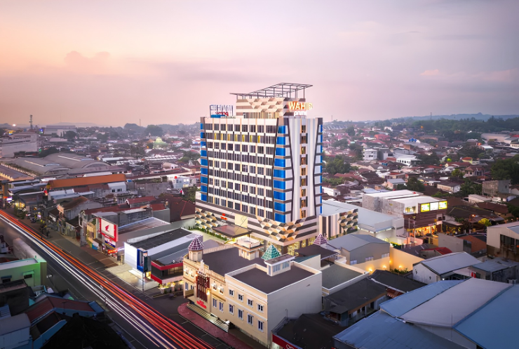
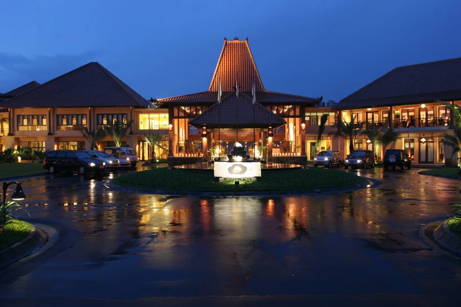
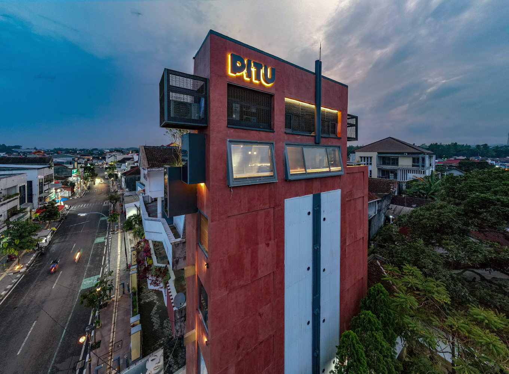

01
01
LOCAL PRODUCT
Enting-enting Gepuk
Produk kuliner yang lagend di Salatiga dan cocok menjadi oleh-oleh .
Discover Story ↗DISCOVER • TASTE • REMEMBER
Salatiga, Jawa Tengah—Kota kecil yang di mana setiap sudutnya memiliki cerita dengan kelezatan kuliner lokal yang tiada tara serta labirin sejarah yang menyimpan banyak makna ^_^.

Beauty along the way

A glimpse of Salatiga
MORE THAN A CITY
Salatiga bukan hanya tentang sebuah kota. Di baliknya, ada cita rasa kuliner lokal dan sejarah yang penuh makna, yang tidak semua orang ketahui.
Ruang Salatiga membantu untuk memperkenalkan Kota Salatiga melalui kelezatan makanan lokal dan tempat bersejarah yang penuh makna didalamnya.
01
Produk kuliner yang lagend di Salatiga dan cocok menjadi oleh-oleh .
Discover Story ↗ 02
02
 03
03
Salah satu pilihan kuliner lokal untuk pengalaman menjelajah Salatiga.
Discover Story ↗ 04
04
Sajian tradisional dengan karakter rasa dan tekstur yang menarik.
Discover Story ↗
Salah satu ruang budaya dan tempat ibadah yang menjadi bagian dari keberagaman Salatiga.
Explore Place ↗
Tempat untuk mengenal kerajinan dan produk lokal Salatiga.
Explore Place ↗

YOUR CITY ESCAPE ↗
02 ↗Pilihan untuk menikmati suasana resort, area hijau, dan waktu istirahat dalam perjalanan mu.

03 ↗Penginapan untuk perjalanan wisata, maupun waktu beristirahat di kota.
Awali perjalanan dengan kuliner tradisional Tumpang Koyor.
Kenali tempat yang menyimpan cerita.
Menikmati suasa malam dengan berburu kuliner dan menjelajahi sudut kota.
Ruang Salatiga mengajak generasi
muda untuk mengenal, menikmati,
dan menjaga cerita lokal.
hubungi dibawah ini jika anda ingin melakukan kolaborasi.